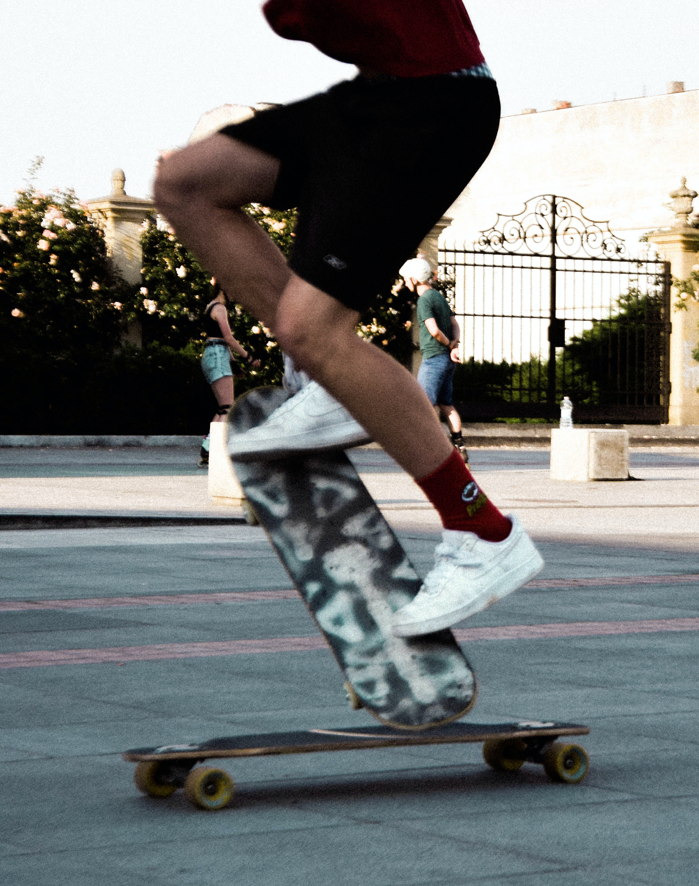

palace skateboard
팔라스 스케이트보드는 2010년 레프 탄주(Lev Tanju)가 런던에서 런칭한 브랜드이다.
제2의 슈프림이라는 별명에 걸맞게 강렬한 로고와 독특한 디자인으로 상당히 많은 인기를 가지고있는 스트릿 브랜드이다.
슈프림이 미국서부의 감성이라면 팔라스는 영국 런던의 축구 감성을 표현한다. 실제로 팔라스 옷들을 보면 축구 유니폼 스타일로 많이 나온것을 알 수 있다.
대표하는 로고가 삼각형답게, 삼각형을 창조적으로 변형해왔다.
차트, 점, 멀티, 담배연기, 재활용, 해골, 뼈, 서킷회로, 별자리, 요트, 점보삼각형, 5륜기 , 샌드위치 , 베이글 등등 셀 수 없이 변형시켜왔다.
리테일 가격은 슈프림보다 약간 비싼정도이다. 현재는 거품이 많이 빠져 리셀 목적으로 팔라스를 구매했다간 손해를 볼 수도 있다.
미개봉 새제품의 매물가도 리테일가 + 배송비 정도로 안정되어있다. 하지만 여전히 인기상품과 팔디다스 제품들은 비싸다.
